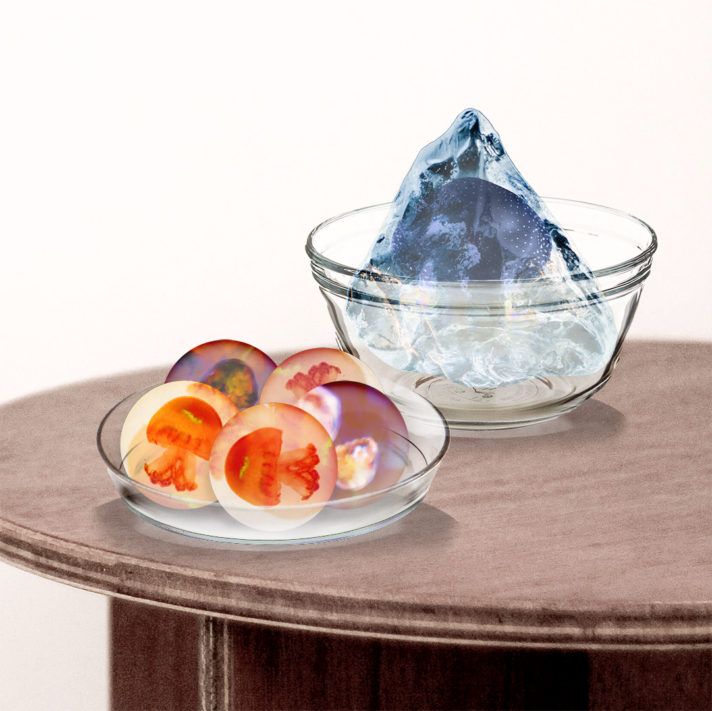

bai a gung po / Family Dinner
bai a gung po 拜阿公婆
worship grandparents
A cultural/religious ritual where descendants worship their
ancestors
Buenlimon Radio x Parsons School of Design
Special and bilingual Mini-series
Episode Summary
This week, we continue our collaboration with Parsons School of
Design. We speak with student Chel Chan, who speculates how Taiwanese
folk rituals might continue in a future in which the necessary
ceremonial ingredients are no longer available. In the year 2100,
rising sea levels will make traditional farming less practical – and
perhaps the ritual staples of pork and chicken will have been replaced
by jellyfish. We’ll explore these new cultural symbols with professor
Alonso Castro.